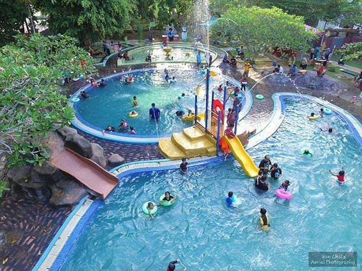

<ion-header>
  <ion-toolbar>
    <ion-buttons slot="start">
    <ion-back-button></ion-back-button>
  </ion-buttons>
    <ion-title>Kelantan</ion-title>
  </ion-toolbar>
</ion-header>

<ion-content [fullscreen]="true">
  <ion-header collapse="condense">
    <ion-toolbar>
      <ion-title size="large">Kelantan</ion-title>
    </ion-toolbar>
  </ion-header>

<ion-card>
  
  <ion-card-header>
    
    <ion-card-title>Taman Air Splash</ion-card-title>
  </ion-card-header>
  <ion-card-content>
    Taman Air Splash terletak di dalam lokasi yang agak tersembunyi dari pandangan ramai walaupun berada di dalam bandar Kota Bharu, menjadikan ianya sebuah ‘hidden germ’ atau permata tersembunyi di Kelantan.  
  </ion-card-content>

  <ion-card>
    <video
    width="100%"
    controls="controls"
    preload="metadata"
    autoreply="autoreply"
    webkit-playsinline="webkit-playsinline"
    class="videoplayer">
    <source src="assets\Homestay Kota Bharu Srikota  Taman Air Splash.mp4" type="video/mp4">
  </video>
  </ion-card>

</ion-card>